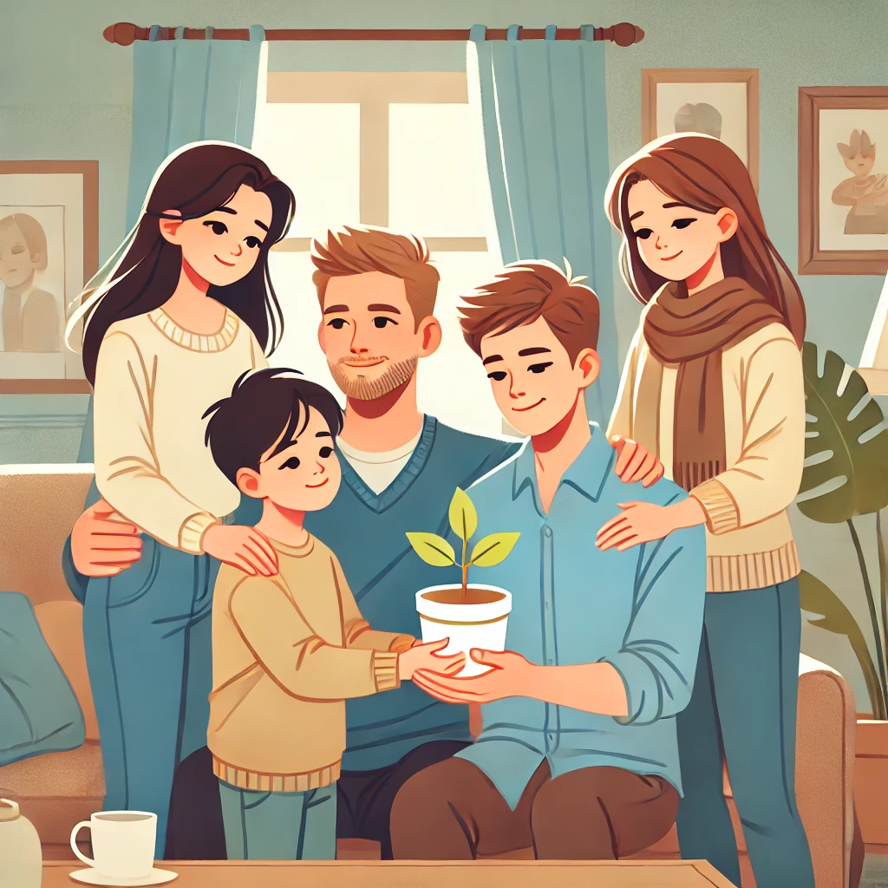

Finding Motivation in Everyday Heroes: A Reflection on Life's Inspirations
Motivation is an often complex and deeply personal aspect of life. For me, it emerges from various sources, each uniquely inspiring and pushing me forward with purpose. At the heart of my drive are the people around me—my teachers, family, the elderly, young children, and hardworking adults—whose determination, resilience, and sacrifices fuel my commitment to make a meaningful impact in my own life and the lives of others.
The Power of Teachers’ Dedication
My professors and teachers are central to my motivation. These remarkable individuals devote time, energy, and immense patience to help students like me grow and excel. Their dedication is not merely academic; it’s an investment in our future. I am motivated to work hard not only for myself but also for them. I want to honor their efforts by applying what I’ve learned in practical, real-world settings.
Family Sacrifices: A Foundation of Support
Another driving force in my life is my family, whose sacrifices have always underscored the importance of hard work and resilience. My parents have constantly invested in my education and well-being, encouraging my siblings and me to pursue our dreams. Their quiet compromises remind me of my responsibility to make their sacrifices meaningful.
The Unseen Struggles of the Elderly: A Lesson in Perseverance

Living in Japan has brought me closer to a generation of elderly workers who defy age with resilience and determination. Many of these individuals, well into their eighties and nineties, work tirelessly in jobs that require physical stamina and patience, motivating me to never take my opportunities for granted.
Children: A Source of Joy and Curiosity
Children are an unexpected source of motivation. Their innocence, curiosity, and willingness to share their feelings and ideas bring a fresh perspective on life. Spending time with young children reminds me of the importance of staying curious, open, and hopeful.
Hardworking Young Adults: A Shared Responsibility
I draw strength from the determination of young adults who balance studies, work, and personal responsibilities. Their dedication to building a better future for themselves and their communities reminds me of our collective responsibility.
A Journey of Purpose and Resilience
Motivation comes in many forms, and I am fortunate to find it in the people around me. Their examples remind me to keep striving, to stay connected to my values, and to approach each day with purpose. Every effort counts, and the journey, however difficult, is ultimately worth it.